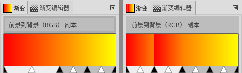

(可停靠对话框→渐变编辑器)
无快捷键。
高级用户
可停靠对话框→渐变编辑器
渐变编辑器对话框用来编辑渐变，其中有些命令的功能与GIMP工具箱→渐变工具是相同的；区别是，渐变编辑器中的操作更多更复杂一些。
渐变编辑器(  )没有列在可停靠对话框列表中，需要从 渐变对话框 中点击(
)没有列在可停靠对话框列表中，需要从 渐变对话框 中点击( 

 )按钮才可以打开。
)按钮才可以打开。
渐变编辑器说明
渐变编辑器可以对渐变的颜色进行编辑。
GIMP自带的渐变无法编辑，只能编辑您创建的自定义渐变。
这里对渐变的编辑操作无法撤销(Ctrl+Z无效)。
每一个渐变都是由多个相邻的颜色片段组成。
每一个颜色片段两端的颜色都可以自定义。
多个颜色片段组合在一起就成了一个完整的渐变。
上面截图中，渐变的上方是渐变的名称。
鼠标停留在渐变的某一处时，渐变下方会显示鼠标位置像素的信息(比值)。
鼠标在渐变的某一处点击时，会把点击位置的颜色设置为工具箱前景色。
鼠标在渐变的某一处点击且同时按Ctrl键时，会把点击位置的颜色设置为工具箱背景色。
渐变下方的黑色三角形是颜色片段的端点。
渐变下方的白色三角形是相邻两个端点的中点。
相邻两个黑色三角形之间为一个片段。
您可以选中一个片段，也可以同时选中多个片段，按Shift键点击即可。
同时选中多个片段时，片段之间必须相邻，不能跨片段多选。
被选中的片段，其两个端点之间会高亮显示。(与主题有关)
未选中的片段，其两个端点之间会灰色显示。(与主题有关)
点击并拖动片段，可以移动片段。
点击并拖动片段前如果按下Shift键，可以在移动片段的同时，压缩相邻片段。
编辑渐变时，注意当前激活的片段是哪一个片段。
您可以移动中点/端点，但起始端点和结束端点不能移动。
一个渐变只能有一个起始端点和一个结束端点，但中间可以有多个片段端点。
可以点击并拖动工具箱中的前景色/背景色到渐变中某个黑色端点来改变该端点的颜色。
右键点击渐变会显示弹出菜单，里面是渐变编辑器的主要操作命令。
最下方的三个按钮可以缩放渐变显示。
渐变编辑器的操作方法
渐变编辑器的操作方法主要是依靠弹出菜单：
渐变编辑器弹出菜单
左端颜色类型：设置渐变当前片段的左端点的颜色：
1.1. 固定：您可以任意指定颜色的色值。1.2. 前景色：使用前景色。1.3. 前景色(透明)：使用前景色的同时，叠加透明效果；叠加的透明与前景色做相同的渐变处理。1.4. 背景色：使用背景色。1.5. 背景色(透明)：使用背景色的同时，叠加透明效果；叠加的透明与背景色做相同的渐变处理。
左端点的颜色：打开颜色选择窗口，在颜色选择窗口中设置当前片段左端点的颜色。
左端颜色加载自：同样是设置当前片段左端点的颜色，只不过多了一些具体的选择：
3.1. 左邻的右端点：使用左边相邻片段的右端点的颜色；如果左边是起始端点，那么会使用结束端点的颜色3.2. 右端点：使用当前片段右端点的颜色。3.3. 前景色：使用工具箱的前景色。(后续前景色发生变化时，这里不会改变)3.4. 背景色：使用工具箱的背景色。(后续前景色发生变化时，这里不会改变)3.5. RGBA：从10个RGBA数值当中选择一个。
保存左端颜色到：把当前片段左端点的颜色保存到10个RGBA数值当中的一个，即上面第3条中的10个RGBA数值。
右端颜色类型：设置渐变当前片段的右端点的颜色：
5.1. 固定：您可以任意指定颜色的色值。5.2. 前景色：使用前景色。5.3. 前景色(透明)：使用前景色的同时，叠加透明效果；叠加的透明与前景色做相同的渐变处理。5.4. 背景色：使用背景色。5.5. 背景色(透明)：使用背景色的同时，叠加透明效果；叠加的透明与背景色做相同的渐变处理。
右端点的颜色：打开颜色选择窗口，在颜色选择窗口中设置当前片段右端点的颜色。
右端颜色加载自：同样是设置当前片段右端点的颜色，只不过多了一些具体的选择：
7.1. 右邻的左端点：使用右边相邻片段的左端点的颜色；如果右边是整个渐变的结束端点，那么会使用整个渐变的起始端点的颜色7.2. 左端点：使用当前片段左端点的颜色。7.3. 前景色：使用工具箱的前景色。(后续前景色发生变化时，这里不会改变)7.4. 背景色：使用工具箱的背景色。(后续前景色发生变化时，这里不会改变)7.5. RGBA：从10个RGBA数值当中选择一个。
保存右端颜色到：把当前片段右端点的颜色保存到10个RGBA数值当中的一个，即上面第7条中的10个RGBA数值。
片段混合和功能：通过端点到中点的函数变化来调整片段的过渡效果：
9.1. 线性：相邻两个颜色点之间的颜色从一个点到另一个点呈线性变化。9.2. 曲线：与“线性”类似，区别是，此选项会使颜色的线性变化不均匀：两端的变化比中间快。9.3. 正弦：与“曲线”相反：两端颜色变化比中间慢。9.4. 球面(增大)：左边颜色比右边变化快(向起始端点方向挤压)。9.5. 球面(减小)：右边颜色比左边变化快(向结束端点方向挤压)。9.6. 步长：硬过渡。
6种混合效果对比，两个端点之间没有过渡点
片段着色类型：使用哪种颜色过度类型：
10.1. RGB：两个颜色点之间的颜色从一个直接变化到另一个，无其它颜色。10.2. HSV(逆时针色相)：使用色相环逆时针颜色顺序。10.3. HSV(顺时针色相)：使用色相环顺时针颜色顺序。(色相环顺时针/逆时针顺序请参考可停靠对话框→渐变⇒渐变对话框说明)
翻转片段：左右翻转所有颜色和端点的位置。
复制片段：这里复制不是复制到剪贴板，而是把当前片段分成多个等分，每个等分都是原始片段的压缩副本。此命令会弹出一个窗口，让您选择分成几个等分：
右图是在左图的基础上进行复制，次数为2
在中点分割片段：把选中的片段从中点处(白色三角形)进行分割。
平均分割片段：把选中的片段从中间位置进行平均分割。白色三角形的位置不一定在片段的正中间，所以，此命令与白色三角形的位置无关。
删除片段：删除所选片段；片段被删除后，其中心位置用一个黑色三角形代替，两侧相邻片段被放大以填补空白。(如果片段多选，此命令会变为删除选区，“选区”等同于多个片段)
重置片段中点：将所选片段的白色三角形移动到片段正中间的位置。(如果片段多选，此命令会变为删除选区，“选区”等同于多个片段)
重置片段操作点：所选片段所有三角形之间的距离相等，无论三角形是黑是白。(如果片段多选，此命令会变为删除选区，“选区”等同于多个片段)
混合点的颜色：使所选的多个片段的内部端点的颜色被平均化，会导致片段间的过渡很平滑。(会修改端点的色相)(单选片段无效)
混合点的不透明度：与上面第18条命令的作用相同，但混合的是不透明度，不是颜色。